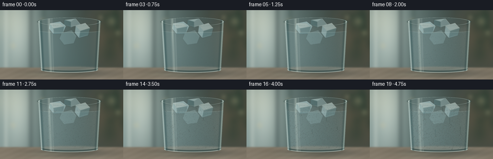
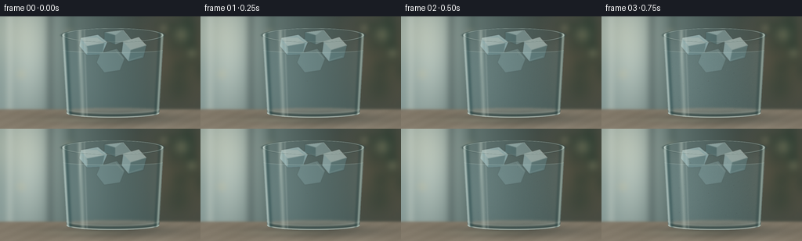

CODING AGENTS AS PIXEL WORLD MODELS
traex/GPT-6.1-Sol · phygen_111
点击播放 · 原生 RGB 像素
逐轮保存的候选
回放视频、检查图与代码变化。
每份候选均可单独播放。实际图片检查记录在下方工具轨迹中。
候选 01播放与检查图
点击播放 · 原生 RGB 像素


展开代码变化
--- 上一保存版本
+++ 本次保存版本
@@ -0,0 +1,245 @@
+"""Procedural RGB timelapse of condensation on a cold drinking glass.
+No external images or models; all optics, texture and liquid motion are analytic.
+"""
+from pathlib import Path
+import json
+import numpy as np
+from PIL import Image, ImageDraw, ImageFilter
+import artifact_io
+
+ROOT = Path(__file__).resolve().parent
+SPEC = json.loads((ROOT / 'task_spec.json').read_text())
+W, H, S = SPEC['width'], SPEC['height'], 3
+SW, SH = W*S, H*S
+Y, X = np.mgrid[0:SH, 0:SW].astype(np.float32) / S
+rng = np.random.default_rng(9187)
+
+def blur(a, radius):
+ return np.asarray(Image.fromarray(np.uint8(np.clip(a, 0, 255))).filter(ImageFilter.GaussianBlur(radius*S)), dtype=np.float32)
+
+def mix(a, color, mask):
+ return a*(1-mask[..., None]) + np.asarray(color, np.float32)*mask[..., None]
+
+def gauss(x,y,sx,sy):
+ return np.exp(-.5*((X-x)/sx)**2-.5*((Y-y)/sy)**2)
+
+def sample(a, x, y):
+ xx = np.clip(x*S,0,SW-1).astype(np.int32)
+ yy = np.clip(y*S,0,SH-1).astype(np.int32)
+ return a[yy, xx]
+
+# An out-of-focus kitchen: window to the left, a plant and warm room to the right.
+bg = np.zeros((SH,SW,3),np.float32)
+bg[:] = (58,75,72)
+bg = mix(bg, (162,185,181), np.clip(1-X/177,0,1)*.81)
+bg = mix(bg, (111,90,67), gauss(236,54,45,60)*.65)
+bg = mix(bg, (201,215,207), gauss(36,46,21,60)*.74)
+bg = mix(bg, (228,228,199), gauss(16,18,33,28)*.32)
+# Broad vertical out-of-focus window mullions.
+for xx, width, col, opacity in [(64,3,(47,61,61),.4),(12,2,(223,232,222),.5),(91,4,(63,82,76),.35)]:
+ bg = mix(bg,col,np.exp(-.5*((X-xx)/width)**2)*opacity)
+for i in range(16):
+ px=rng.uniform(212,272); py=rng.uniform(1,105)
+ bg=mix(bg,(30,58,47),gauss(px,py,rng.uniform(5,13),rng.uniform(7,17))*rng.uniform(.12,.34))
+for xx,yy,rr in [(232,23,6),(245,47,4),(209,15,3),(88,23,4),(27,74,4)]:
+ bg=mix(bg,(225,207,159),gauss(xx,yy,rr,rr)*.24)
+bg=blur(bg,3)
+# Honed, warm stone counter, with a shallow depth of field.
+table = Y > 119
+stone = np.zeros_like(bg)
+stone[:] = (137,127,110)
+stone += ((Y-119)*.33)[...,None]
+stone += (3*np.sin(X*.061+Y*.013)+1.8*np.sin(X*.23+Y*.56))[...,None]
+tex=rng.normal(0, .95, (SH,SW)).astype(np.float32)
+stone += tex[...,None]
+bg=mix(bg,stone,1/(1+np.exp(np.clip(-(Y-119)*1.2,-30,30))))
+# Contact shadow and refracted pool of daylight.
+bg=mix(bg,(39,48,45),gauss(147,131,58,6)*.53)
+bg=mix(bg,(204,201,169),gauss(111,133,43,2.4)*.18)
+
+# Slightly tapered transparent tumbler, almost frame-filling.
+CX=144.
+def halfwidth(y):
+ return 65 - 6*np.clip((y-25)/102,0,1)
+width=halfwidth(Y)
+u=(X-CX)/width
+bottom=124 + 6*np.sqrt(np.maximum(0,1-u*u))
+top=24-9*np.sqrt(np.maximum(0,1-u*u))
+body=(np.abs(u)<1)&(Y>=top)&(Y<=bottom)
+front=(np.abs(u)<.985)&(Y>=26+7*np.sqrt(np.maximum(0,1-u*u)))&(Y<=bottom-3)
+# The body refracts the background. Side walls fold the background strongly.
+refx=CX + (X-CX)*(.67+.17*u*u) + 5*u**7
+refy=Y + 2*(1-u*u)
+glass=sample(bg,refx,refy).copy()
+glass=mix(glass,(106,144,150),np.full((SH,SW),.11,dtype=np.float32))
+water_mask=(Y>43+3*np.sqrt(np.maximum(0,1-u*u)))
+glass=mix(glass,(102,139,143),water_mask.astype(np.float32)*.20)
+glass += (gauss(111,71,21,54)*8)[...,None]
+base=mix(bg,glass,body.astype(np.float32))
+# Thick base: not opaque, with multiple internal refraction bands.
+base=mix(base,(43,67,66),body*np.exp(-((Y-(bottom-3))/1.7)**2)*.65)
+base=mix(base,(203,215,205),body*np.exp(-((Y-(bottom-.9))/.65)**2)*.76)
+base=mix(base,(148,166,157),body*np.exp(-((Y-(bottom-6))/.7)**2)*.32)
+
+# Soft, transparent faceted ice near the top proves the surface is chilled.
+ice = Image.new('RGBA',(SW,SH),(0,0,0,0))
+d = ImageDraw.Draw(ice)
+def poly(points,c):
+ d.polygon([(round(x*S),round(y*S)) for x,y in points],fill=c)
+def line(points,c,w=1):
+ d.line([(round(x*S),round(y*S)) for x,y in points],fill=c,width=max(1,round(w*S)),joint='curve')
+# Rear cube.
+poly([(133,20),(157,17),(167,29),(147,36),(133,30)],(187,213,211,140))
+poly([(133,20),(147,24),(147,36),(133,30)],(91,137,143,72))
+poly([(147,24),(157,17),(167,29),(147,36)],(182,211,211,93))
+line([(134,20),(157,17),(167,29)],(224,237,226,159),.6)
+# Left, irregular wet cube, with rounded bevel glints.
+poly([(103,27),(125,23),(137,33),(130,49),(111,50),(101,38)],(171,206,209,145))
+poly([(103,27),(124,27),(133,34),(111,38)],(216,233,228,140))
+poly([(111,38),(133,34),(130,49),(111,50)],(124,168,175,83))
+line([(103,28),(123,24),(136,33)],(230,241,233,151),.8)
+line([(104,35),(111,40),(111,47)],(228,239,228,95),.5)
+# Right cube; submerged lower face has a cyan refracted edge.
+poly([(157,32),(177,26),(187,37),(183,53),(164,58),(155,47)],(172,204,206,142))
+poly([(157,32),(177,26),(187,37),(167,43)],(213,233,228,130))
+poly([(167,43),(187,37),(183,53),(164,58)],(107,153,159,89))
+line([(157,32),(177,27),(187,37)],(235,241,230,146),.8)
+line([(165,56),(181,51)],(198,223,216,120),.7)
+# A lower submerged facet.
+poly([(128,47),(149,41),(159,54),(153,69),(133,72),(123,59)],(151,188,191,68))
+line([(128,47),(147,43),(157,54)],(209,226,216,81),.65)
+ice=ice.filter(ImageFilter.GaussianBlur(.48*S))
+ia=np.asarray(ice,dtype=np.float32)
+base=mix(base,ia[:,:,:3],ia[:,:,3]/255*body)
+
+# Elliptical glass lip and waterline; thin, optically reflective, not a solid rim.
+rim = np.sqrt(((X-CX)/65)**2 + ((Y-24)/9)**2)
+base=mix(base,(48,71,70),np.exp(-((rim-1)/.033)**2)*.49)
+base=mix(base,(220,233,222),np.exp(-((rim-.977)/.016)**2)*.69)
+watercurve=43 + 3.3*np.sqrt(np.maximum(0,1-u*u))
+base=mix(base,(198,215,206),np.exp(-((Y-watercurve)/.42)**2)*body*.29)
+# Sidewall Fresnel strips and the reflection of a tall window on the curved glass.
+for pos,ww,opacity,col in [(-.968,.020,.71,(213,229,222)),(-.920,.029,.43,(32,67,70)),(.966,.018,.59,(182,205,194)),(.916,.023,.35,(33,62,63)),(-.65,.032,.27,(226,237,224)),(-.56,.014,.15,(226,237,230))]:
+ edge=np.exp(-.5*((u-pos)/ww)**2)*body*opacity
+ base=mix(base,col,edge)
+base=mix(base,(226,237,224),gauss(102,45,1.1,17)*body*.18)
+# Static photographic grain, independent from the evolving condensation.
+base += rng.normal(0,.38,(SH,SW,1)).astype(np.float32)
+base=np.clip(base,0,255)
+
+# Fine-scale nucleation field. Each site has a fixed activation time, so there
+# is no temporal sparkle/noise. Surface wetting becomes gradually more diffuse.
+fine_noise=rng.uniform(0,1,(SH,SW)).astype(np.float32)
+fine_noise=blur(np.repeat((fine_noise*255)[:,:,None],3,axis=2),.22)[:,:,0]/255
+wetmask=front.astype(np.float32)
+# Keep the lip and edge reflections crisp, condensation is on the outer wall.
+wetmask*=np.clip((Y-29)/9,0,1)*np.clip((1-np.abs(u))*7,0,1)
+wetmask*=np.clip((bottom-Y-2)/5,0,1)
+
+# Microscale droplets are seeded once and simulated through all exposures.
+# Coalescence conserves droplet volume (r^3); large drops overcome adhesion,
+# run down the glass and absorb smaller droplets in their path.
+drops=[]
+for k in range(650):
+ y=float(rng.uniform(34,123)); hw=float(halfwidth(y))
+ x=float(CX+rng.uniform(-.925,.925)*hw)
+ if y>124+6*np.sqrt(max(0,1-((x-CX)/hw)**2))-5: continue
+ drops.append(dict(x=x,y=y,r=0.,birth=float(rng.uniform(.2,3.8)),rate=float(rng.uniform(.11,.28)),active=True,trail=[]))
+# Several early condensation beads become the eventual rivulets.
+for x,y,t,rate in [(113,44,.12,.85),(166,59,.3,.83),(188,77,.4,.76),(136,83,.1,.75),(99,76,.6,.65),(151,38,.2,.69)]:
+ drops.append(dict(x=float(x),y=float(y),r=0.,birth=t,rate=rate,active=True,trail=[]))
+
+# Render one transparent convex water lens with refraction, a dark contact rim,
+# a white window highlight and a lower caustic crescent.
+def bead(img, underlying, x,y,r,moving=False):
+ if r<.13: return
+ rx=r*.86
+ ry=r*(1.21 if moving else 1.04)
+ x0=max(0,int((x-rx-1)*S)); x1=min(SW,int((x+rx+1)*S)+1)
+ y0=max(0,int((y-ry-1)*S)); y1=min(SH,int((y+ry+1)*S)+1)
+ if x1<=x0 or y1<=y0:return
+ px=X[y0:y1,x0:x1]; py=Y[y0:y1,x0:x1]
+ dx=(px-x)/rx; dy=(py-y)/ry
+ rho=np.sqrt(dx*dx+dy*dy)
+ alpha=np.clip((1-rho)*S*min(rx,ry)+.35,0,1)
+ core=np.sqrt(np.maximum(0,1-rho*rho))
+ # Droplet magnifies and inverts portions of the local window reflection.
+ lens=sample(underlying,px+dx*r*1.35,py+dy*r*1.35).copy()
+ lens *= (1-.11*core-.16*np.exp(-((rho-.90)/.13)**2))[...,None]
+ lens += (np.exp(-((rho-.71)/.18)**2)*np.maximum(0,dy)*29)[...,None]
+ # Reflection stretches into a short arc on the upper-left curvature.
+ glint=np.exp(-((dx+.35)/.21)**2-((dy+.44)/.14)**2)
+ lens=mix(lens,(249,253,247),glint*.90)
+ second=np.exp(-((dx-.18)/.37)**2-((dy-.66)/.12)**2)
+ lens=mix(lens,(217,237,226),second*.42)
+ shade=np.exp(-((rho-.96)/.055)**2)*np.clip(.45+dy*.45+dx*.24,0,1)
+ lens=mix(lens,(34,57,55),shade*.48)
+ patch=img[y0:y1,x0:x1]
+ img[y0:y1,x0:x1]=mix(patch,lens,alpha)
+
+frames=[]
+dt=.05
+for f in range(SPEC['frames']):
+ t=f/SPEC['fps']
+ # Integrate condensation and gravity at fine timesteps between exposures.
+ if f:
+ for sub in range(5):
+ st=(f-1)/SPEC['fps']+(sub+1)*dt
+ for a in drops:
+ if not a['active'] or st<a['birth']:continue
+ # Flux supplies volume; radius growth slows as surface enlarges.
+ a['r']=(a['r']**3 + a['rate']*dt*(1+.42*st))**(1/3)
+ if a['r']>1.44:
+ old=(a['x'],a['y'],a['r'])
+ speed=2.3+16*(a['r']-1.44)
+ a['x']+=.085*np.sin(a['y']*.25)*dt
+ a['y']+=speed*dt
+ a['trail'].append(old)
+ # Leave a small part of the water adhered along the track.
+ a['r']=(a['r']**3*.997)**(1/3)
+ if a['y']>126:
+ a['active']=False
+ # Moving/growing beads can fuse with neighbours.
+ live=[a for a in drops if a['active'] and a['r']>.20]
+ for i,a in enumerate(live):
+ if not a['active']:continue
+ for b in live[i+1:]:
+ if not b['active']:continue
+ dist2=(a['x']-b['x'])**2+(a['y']-b['y'])**2
+ if dist2 < (.72*(a['r']+b['r']))**2:
+ va,vb=a['r']**3,b['r']**3
+ # The larger bead retains its position; the small one flows in.
+ if vb>va:
+ a,b=b,a
+ a['x']=(a['x']*va+b['x']*vb)/(va+vb) if va>=vb else a['x']
+ a['r']=(va+vb)**(1/3)
+ b['active']=False
+ if not live[i]['active']:break
+ # A velvety diffuse mist arrives first, then resolves into beads and rivulets.
+ wet=1-np.exp(-t*.48)
+ haze=wetmask*wet*(.12+.10*fine_noise)
+ under=mix(base,blur(base,1.15),(wetmask*wet*.22))
+ under=mix(under,(173,192,189),haze)
+ # Micro-condensation has lower contrast than resolved droplets.
+ speckle=(fine_noise-.5)*wet*7*wetmask
+ under+=speckle[...,None]
+ img=under.copy()
+ # Clear draining traces in the mist behind the running droplets.
+ for a in drops:
+ for xx,yy,rr in a['trail'][::3]:
+ mask=gauss(xx,yy,max(.35,rr*.32),.9)*wetmask*.48
+ img=mix(img,base,mask)
+ # Tiny fixed nascent droplets fill gaps between the macroscopic drops.
+ # Their number increases continuously because birth time is spatially stable.
+ for a in sorted(drops,key=lambda a:a['r']):
+ if a['active'] and t>=a['birth']:
+ bead(img,under,a['x'],a['y'],a['r'],a['r']>1.44)
+ # Very subtle lens vignette and non-clipped filmic shoulder.
+ vignette=1-.095*((X-137)/170)**2-.07*((Y-66)/112)**2
+ img*=vignette[...,None]
+ image=Image.fromarray(np.uint8(np.clip(img,0,255)))
+ image=image.resize((W,H),Image.Resampling.LANCZOS)
+ frames.append(np.asarray(image))
+ print(f'Rendered frame {f+1:02d}/{SPEC["frames"]}',flush=True)
+artifact_io.save(np.stack(frames),ROOT)
+print('Saved pixels.npz, RGB frames and HTML video player.',flush=True)
可观测工具轨迹
实际执行的命令与返回图片。
命令 1exit 0
/bin/bash -lc 'ls -la && cat prompt.txt && cat GENERATION_RULES.md && cat task_spec.json'
命令 2exit 0
/bin/bash -lc "cat artifact_io.py && python - <<'PY' import numpy,PIL print(numpy.__version__,PIL.__version__) PY"
命令 3exit 0
/bin/bash -lc "cat > generate.py <<'PY'
\"\"\"Procedural RGB timelapse of condensation on a cold drinking glass.
No external images or models; all optics, texture and liquid motion are analytic.
\"\"\"
from pathlib import Path
import json
import numpy as np
from PIL import Image, ImageDraw, ImageFilter
import artifact_io
ROOT = Path(__file__).resolve().parent
SPEC = json.loads((ROOT / 'task_spec.json').read_text())
W, H, S = SPEC['width'], SPEC['height'], 3
SW, SH = W*S, H*S
Y, X = np.mgrid[0:SH, 0:SW].astype(np.float32) / S
rng = np.random.default_rng(9187)
def blur(a, radius):
return np.asarray(Image.fromarray(np.uint8(np.clip(a, 0, 255))).filter(ImageFilter.GaussianBlur(radius*S)), dtype=np.float32)
def mix(a, color, mask):
return a*(1-mask[..., None]) + np.asarray(color, np.float32)*mask[..., None]
def gauss(x,y,sx,sy):
return np.exp(-.5*((X-x)/sx)**2-.5*((Y-y)/sy)**2)
def sample(a, x, y):
xx = np.clip(x*S,0,SW-1).astype(np.int32)
yy = np.clip(y*S,0,SH-1).astype(np.int32)
return a[yy, xx]
# An out-of-focus kitchen: window to the left, a plant and warm room to the right.
bg = np.zeros((SH,SW,3),np.float32)
bg[:] = (58,75,72)
bg = mix(bg, (162,185,181), np.clip(1-X/177,0,1)*.81)
bg = mix(bg, (111,90,67), gauss(236,54,45,60)*.65)
bg = mix(bg, (201,215,207), gauss(36,46,21,60)*.74)
bg = mix(bg, (228,228,199), gauss(16,18,33,28)*.32)
# Broad vertical out-of-focus window mullions.
for xx, width, col, opacity in [(64,3,(47,61,61),.4),(12,2,(223,232,222),.5),(91,4,(63,82,76),.35)]:
bg = mix(bg,col,np.exp(-.5*((X-xx)/width)**2)*opacity)
for i in range(16):
px=rng.uniform(212,272); py=rng.uniform(1,105)
bg=mix(bg,(30,58,47),gauss(px,py,rng.uniform(5,13),rng.uniform(7,17))*rng.uniform(.12,.34))
for xx,yy,rr in [(232,23,6),(245,47,4),(209,15,3),(88,23,4),(27,74,4)]:
bg=mix(bg,(225,207,159),gauss(xx,yy,rr,rr)*.24)
bg=blur(bg,3)
# Honed, warm stone counter, with a shallow depth of field.
table = Y > 119
stone = np.zeros_like(bg)
stone[:] = (137,127,110)
stone += ((Y-119)*.33)[...,None]
stone += (3*np.sin(X*.061+Y*.013)+1.8*np.sin(X*.23+Y*.56))[...,None]
tex=rng.normal(0, .95, (SH,SW)).astype(np.float32)
stone += tex[...,None]
bg=mix(bg,stone,1/(1+np.exp(np.clip(-(Y-119)*1.2,-30,30))))
# Contact shadow and refracted pool of daylight.
bg=mix(bg,(39,48,45),gauss(147,131,58,6)*.53)
bg=mix(bg,(204,201,169),gauss(111,133,43,2.4)*.18)
# Slightly tapered transparent tumbler, almost frame-filling.
CX=144.
def halfwidth(y):
return 65 - 6*np.clip((y-25)/102,0,1)
width=halfwidth(Y)
u=(X-CX)/width
bottom=124 + 6*np.sqrt(np.maximum(0,1-u*u))
top=24-9*np.sqrt(np.maximum(0,1-u*u))
body=(np.abs(u)<1)&(Y>=top)&(Y<=bottom)
front=(np.abs(u)<.985)&(Y>=26+7*np.sqrt(np.maximum(0,1-u*u)))&(Y<=bottom-3)
# The body refracts the background. Side walls fold the background strongly.
refx=CX + (X-CX)*(.67+.17*u*u) + 5*u**7
refy=Y + 2*(1-u*u)
glass=sample(bg,refx,refy).copy()
glass=mix(glass,(106,144,150),np.full((SH,SW),.11,dtype=np.float32))
water_mask=(Y>43+3*np.sqrt(np.maximum(0,1-u*u)))
glass=mix(glass,(102,139,143),water_mask.astype(np.float32)*.20)
glass += (gauss(111,71,21,54)*8)[...,None]
base=mix(bg,glass,body.astype(np.float32))
# Thick base: not opaque, with multiple internal refraction bands.
base=mix(base,(43,67,66),body*np.exp(-((Y-(bottom-3))/1.7)**2)*.65)
base=mix(base,(203,215,205),body*np.exp(-((Y-(bottom-.9))/.65)**2)*.76)
base=mix(base,(148,166,157),body*np.exp(-((Y-(bottom-6))/.7)**2)*.32)
# Soft, transparent faceted ice near the top proves the surface is chilled.
ice = Image.new('RGBA',(SW,SH),(0,0,0,0))
d = ImageDraw.Draw(ice)
def poly(points,c):
d.polygon([(round(x*S),round(y*S)) for x,y in points],fill=c)
def line(points,c,w=1):
d.line([(round(x*S),round(y*S)) for x,y in points],fill=c,width=max(1,round(w*S)),joint='curve')
# Rear cube.
poly([(133,20),(157,17),(167,29),(147,36),(133,30)],(187,213,211,140))
poly([(133,20),(147,24),(147,36),(133,30)],(91,137,143,72))
poly([(147,24),(157,17),(167,29),(147,36)],(182,211,211,93))
line([(134,20),(157,17),(167,29)],(224,237,226,159),.6)
# Left, irregular wet cube, with rounded bevel glints.
poly([(103,27),(125,23),(137,33),(130,49),(111,50),(101,38)],(171,206,209,145))
poly([(103,27),(124,27),(133,34),(111,38)],(216,233,228,140))
poly([(111,38),(133,34),(130,49),(111,50)],(124,168,175,83))
line([(103,28),(123,24),(136,33)],(230,241,233,151),.8)
line([(104,35),(111,40),(111,47)],(228,239,228,95),.5)
# Right cube; submerged lower face has a cyan refracted edge.
poly([(157,32),(177,26),(187,37),(183,53),(164,58),(155,47)],(172,204,206,142))
poly([(157,32),(177,26),(187,37),(167,43)],(213,233,228,130))
poly([(167,43),(187,37),(183,53),(164,58)],(107,153,159,89))
line([(157,32),(177,27),(187,37)],(235,241,230,146),.8)
line([(165,56),(181,51)],(198,223,216,120),.7)
# A lower submerged facet.
poly([(128,47),(149,41),(159,54),(153,69),(133,72),(123,59)],(151,188,191,68))
line([(128,47),(147,43),(157,54)],(209,226,216,81),.65)
ice=ice.filter(ImageFilter.GaussianBlur(.48*S))
ia=np.asarray(ice,dtype=np.float32)
base=mix(base,ia[:,:,:3],ia[:,:,3]/255*body)
# Elliptical glass lip and waterline; thin, optically reflective, not a solid rim.
rim = np.sqrt(((X-CX)/65)**2 + ((Y-24)/9)**2)
base=mix(base,(48,71,70),np.exp(-((rim-1)/.033)**2)*.49)
base=mix(base,(220,233,222),np.exp(-((rim-.977)/.016)**2)*.69)
watercurve=43 + 3.3*np.sqrt(np.maximum(0,1-u*u))
base=mix(base,(198,215,206),np.exp(-((Y-watercurve)/.42)**2)*body*.29)
# Sidewall Fresnel strips and the reflection of a tall window on the curved glass.
for pos,ww,opacity,col in [(-.968,.020,.71,(213,229,222)),(-.920,.029,.43,(32,67,70)),(.966,.018,.59,(182,205,194)),(.916,.023,.35,(33,62,63)),(-.65,.032,.27,(226,237,224)),(-.56,.014,.15,(226,237,230))]:
edge=np.exp(-.5*((u-pos)/ww)**2)*body*opacity
base=mix(base,col,edge)
base=mix(base,(226,237,224),gauss(102,45,1.1,17)*body*.18)
# Static photographic grain, independent from the evolving condensation.
base += rng.normal(0,.38,(SH,SW,1)).astype(np.float32)
base=np.clip(base,0,255)
# Fine-scale nucleation field. Each site has a fixed activation time, so there
# is no temporal sparkle/noise. Surface wetting becomes gradually more diffuse.
fine_noise=rng.uniform(0,1,(SH,SW)).astype(np.float32)
fine_noise=blur(np.repeat((fine_noise*255)[:,:,None],3,axis=2),.22)[:,:,0]/255
wetmask=front.astype(np.float32)
# Keep the lip and edge reflections crisp, condensation is on the outer wall.
wetmask*=np.clip((Y-29)/9,0,1)*np.clip((1-np.abs(u))*7,0,1)
wetmask*=np.clip((bottom-Y-2)/5,0,1)
# Microscale droplets are seeded once and simulated through all exposures.
# Coalescence conserves droplet volume (r"'^3); large drops overcome adhesion,
# run down the glass and absorb smaller droplets in their path.
drops=[]
for k in range(650):
y=float(rng.uniform(34,123)); hw=float(halfwidth(y))
x=float(CX+rng.uniform(-.925,.925)*hw)
if y>124+6*np.sqrt(max(0,1-((x-CX)/hw)**2))-5: continue
drops.append(dict(x=x,y=y,r=0.,birth=float(rng.uniform(.2,3.8)),rate=float(rng.uniform(.11,.28)),active=True,trail=[]))
# Several early condensation beads become the eventual rivulets.
for x,y,t,rate in [(113,44,.12,.85),(166,59,.3,.83),(188,77,.4,.76),(136,83,.1,.75),(99,76,.6,.65),(151,38,.2,.69)]:
drops.append(dict(x=float(x),y=float(y),r=0.,birth=t,rate=rate,active=True,trail=[]))
# Render one transparent convex water lens with refraction, a dark contact rim,
# a white window highlight and a lower caustic crescent.
def bead(img, underlying, x,y,r,moving=False):
if r<.13: return
rx=r*.86
ry=r*(1.21 if moving else 1.04)
x0=max(0,int((x-rx-1)*S)); x1=min(SW,int((x+rx+1)*S)+1)
y0=max(0,int((y-ry-1)*S)); y1=min(SH,int((y+ry+1)*S)+1)
if x1<=x0 or y1<=y0:return
px=X[y0:y1,x0:x1]; py=Y[y0:y1,x0:x1]
dx=(px-x)/rx; dy=(py-y)/ry
rho=np.sqrt(dx*dx+dy*dy)
alpha=np.clip((1-rho)*S*min(rx,ry)+.35,0,1)
core=np.sqrt(np.maximum(0,1-rho*rho))
# Droplet magnifies and inverts portions of the local window reflection.
lens=sample(underlying,px+dx*r*1.35,py+dy*r*1.35).copy()
lens *= (1-.11*core-.16*np.exp(-((rho-.90)/.13)**2))[...,None]
lens += (np.exp(-((rho-.71)/.18)**2)*np.maximum(0,dy)*29)[...,None]
# Reflection stretches into a short arc on the upper-left curvature.
glint=np.exp(-((dx+.35)/.21)**2-((dy+.44)/.14)**2)
lens=mix(lens,(249,253,247),glint*.90)
second=np.exp(-((dx-.18)/.37)**2-((dy-.66)/.12)**2)
lens=mix(lens,(217,237,226),second*.42)
shade=np.exp(-((rho-.96)/.055)**2)*np.clip(.45+dy*.45+dx*.24,0,1)
lens=mix(lens,(34,57,55),shade*.48)
patch=img[y0:y1,x0:x1]
img[y0:y1,x0:x1]=mix(patch,lens,alpha)
frames=[]
dt=.05
for f in range(SPEC['"'frames']):
t=f/SPEC['fps']
# Integrate condensation and gravity at fine timesteps between exposures.
if f:
for sub in range(5):
st=(f-1)/SPEC['fps']+(sub+1)*dt
for a in drops:
if not a['active'] or st<a['birth']:continue
# Flux supplies volume; radius growth slows as surface enlarges.
a['r']=(a['r']**3 + a['rate']*dt*(1+.42*st))**(1/3)
if a['r']>1.44:
old=(a['x'],a['y'],a['r'])
speed=2.3+16*(a['r']-1.44)
a['x']+=.085*np.sin(a['y']*.25)*dt
a['y']+=speed*dt
a['trail'].append(old)
# Leave a small part of the water adhered along the track.
a['r']=(a['r']**3*.997)**(1/3)
if a['y']>126:
a['active']=False
# Moving/growing beads can fuse with neighbours.
live=[a for a in drops if a['active'] and a['r']>.20]
for i,a in enumerate(live):
if not a['active']:continue
for b in live[i+1:]:
if not b['active']:continue
dist2=(a['x']-b['x'])**2+(a['y']-b['y'])**2
if dist2 < (.72*(a['r']+b['r']))**2:
va,vb=a['r']**3,b['r']**3
# The larger bead retains its position; the small one flows in.
if vb>va:
a,b=b,a
a['x']=(a['x']*va+b['x']*vb)/(va+vb) if va>=vb else a['x']
a['r']=(va+vb)**(1/3)
b['active']=False
if not live[i]['active']:break
# A velvety diffuse mist arrives first, then resolves into beads and rivulets.
wet=1-np.exp(-t*.48)
haze=wetmask*wet*(.12+.10*fine_noise)
under=mix(base,blur(base,1.15),(wetmask*wet*.22))
under=mix(under,(173,192,189),haze)
# Micro-condensation has lower contrast than resolved droplets.
speckle=(fine_noise-.5)*wet*7*wetmask
under+=speckle[...,None]
img=under.copy()
# Clear draining traces in the mist behind the running droplets.
for a in drops:
for xx,yy,rr in a['trail'][::3]:
mask=gauss(xx,yy,max(.35,rr*.32),.9)*wetmask*.48
img=mix(img,base,mask)
# Tiny fixed nascent droplets fill gaps between the macroscopic drops.
# Their number increases continuously because birth time is spatially stable.
for a in sorted(drops,key=lambda a:a['r']):
if a['active'] and t>=a['birth']:
bead(img,under,a['x'],a['y'],a['r'],a['r']>1.44)
# Very subtle lens vignette and non-clipped filmic shoulder.
vignette=1-.095*((X-137)/170)**2-.07*((Y-66)/112)**2
img*=vignette[...,None]
image=Image.fromarray(np.uint8(np.clip(img,0,255)))
image=image.resize((W,H),Image.Resampling.LANCZOS)
frames.append(np.asarray(image))
print(f'Rendered frame {f+1:02d}/{SPEC[\"frames\"]}',flush=True)
artifact_io.save(np.stack(frames),ROOT)
print('Saved pixels.npz, RGB frames and HTML video player.',flush=True)
PY
python generate.py"命令 4exit 0
/bin/bash -lc "python - <<'PY'
from pathlib import Path
import numpy as np
from PIL import Image
p=Path('.')
a=np.load(p/'pixels.npz')['pixels']
assert a.shape==(144,256,20)
assert len(list((p/'frames').glob('*.png')))==20
assert all(Image.open(p/'frames'/f'{i:02d}.png').mode=='RGB' for i in range(20))
assert (p/'index.html').is_file()
f=np.stack([np.asarray(Image.open(p/'frames'/f'{i:02d}.png')) for i in range(20)])
print('Verified: 20 RGB frames, 256Ã144, 4 fps, 5 seconds.')
print('Mean absolute start-to-end change:',np.abs(f[-1].astype(float)-f[0]).mean())
print('Output:', ', '.join(x.name for x in p.iterdir() if x.name in ['generate.py','pixels.npz','index.html','inspection.png','transition_check.png','frames']))
PY"保存候选 1 份；完成命令 4 次；可验证图片返回 0 张。原始 API 响应与完整日志保留在本地。